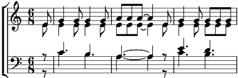

1. Quelle musique quel accord du coeur
David joue pour plaire au seigneur
Une mélodie que tu n'écoute pas
Le piano chante en do majeur
En roi déchu David pleure
Et compose le sublime ,hallelujah..
Refrain:
Hallelujah Hallelujah
Hallelujah Hallelujah..
2. Tu n'as jamais cessé de croire
Pourtant il te suffirait de voir
L'amour caché que tu ne comprends pas
Sa beauté a rougi tes yeux
Fendu l'imensité des cieux
Comme en toi, le sublime hallelujah
Refrain
3. J'ai brûlé l'avenir peut-être
Je me rapelle les murs, les fenêtres
J'étais perdu et tout seul avant toi
J'au pleuré sans courber le dos
J'ai hissé, porté ton drapeau
Et chanté le sublime
Hallelujah
Refrain